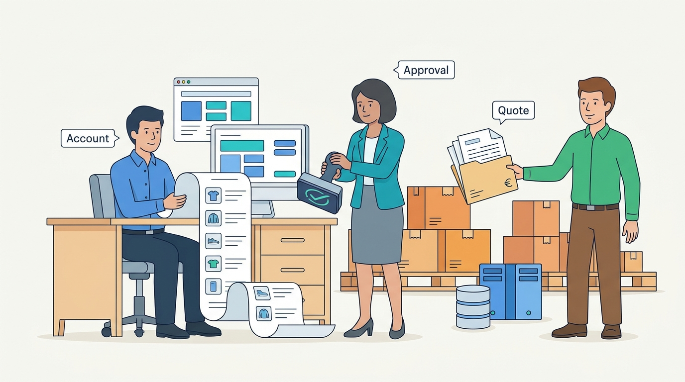

Part V — CHANNELS: Selling Everywhere
Selling to Businesses: Accounts, Contract Prices, Quotes and Approvals
AI-assisted: researched and written with Claude Code and Codex; illustrations generated with Gemini and OpenAI image tools. How this works
